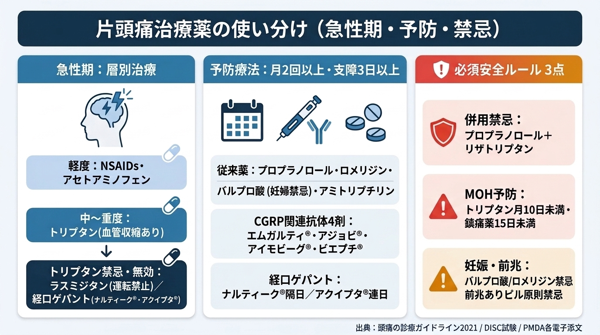

<!doctype html><html lang="ja"><meta charset="utf-8"><meta name="viewport" content="width=device-width,initial-scale=1"><title>片頭痛治療薬の使い分け（急性期・予防・禁忌）：図の拡大</title><style>body{font-family:Meiryo,sans-serif;margin:0;padding:16px;line-height:1.7;color:#17374c}main{max-width:1100px;margin:auto}img{max-width:100%;height:auto}a{color:#195b87}h1{font-size:1.35em}</style><main><h1>片頭痛治療薬の使い分け（急性期層別治療、従来予防薬・CGRP関連抗体4剤・経口ゲパント、必須安全ルール3点）</h1><p>画像をクリック／タップすると原寸で開きます。</p><a href="infographic.png" target="_blank" rel="noopener noreferrer" title="画像を原寸で開く"></a><p><a href="https://blog.ichisouzo-lab.com/entry/2025/06/18/094817">記事に戻る</a></p><p>出典：頭痛の診療ガイドライン2021 / DISC試験 (JAMA 2000) / PMDA各電子添文</p></main></html>
